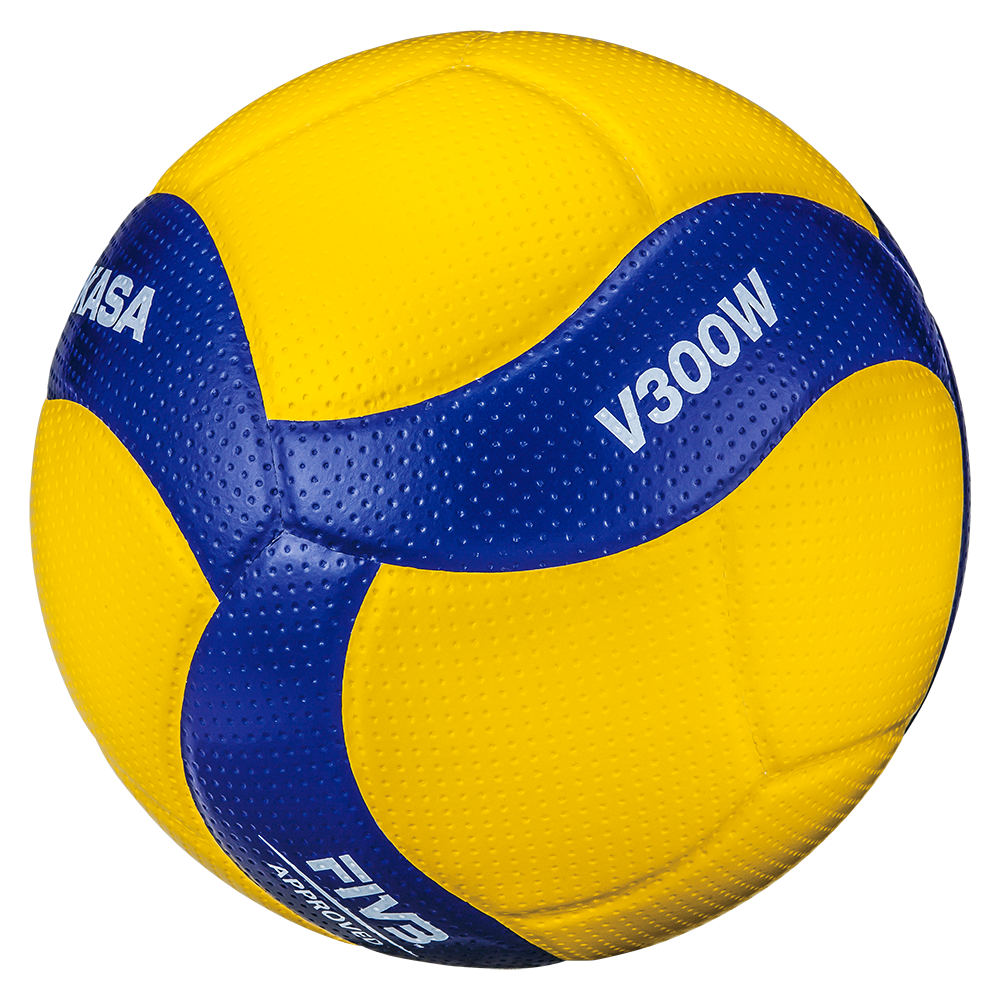

Volleyball was invented in 1895 by William G. Morgan, physical director of the Young Men’s Christian Association (YMCA) in Holyoke, Massachusetts. It was designed as an indoor sport for businessmen who found the new game of basketball too vigorous. Morgan called the sport “mintonette,” until a professor from Springfield College in Massachusetts noted the volleying nature of play and proposed the name of “volleyball.”

In 1916 rules were issued jointly by the YMCA and the National Collegiate Athletic Association (NCAA). The first nationwide tournament in the United States was conducted by the National YMCA Physical Education Committee in New York City in 1922.
The United States Volleyball Association (USVBA) was formed in 1928 and recognized as the rules-making, governing body in the United States. From 1928 the USVBA—now known as USA Volleyball (USAV)—has conducted annual national men’s and senior men’s (age 35 and older) volleyball championships.
Its women’s division was started in 1949, and a senior women’s division (age 30 and older) was added in 1977.